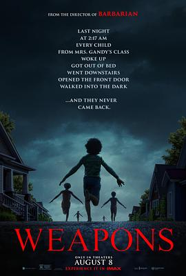

6.8
凶器
Weapons
2025
美国
评分 6.8
导演:
扎克·克雷格
演员:
乔什·布洛林 / 朱莉娅·加纳 / 阿尔登·埃伦瑞奇 / 奥斯汀·艾布拉姆斯 / 卡里·克里斯托弗 / 王汉斌 / 埃米·马迪根
类型:
剧情,恐怖,悬疑,惊悚
剧情简介
在宾夕法尼亚一个看似宁静的小镇，17 名小学同班学生在同一天、同一时刻神秘消失，只留下艾历克斯（卡里·克里斯托弗 饰）孤零零地站在空荡教室中。他的老师贾斯汀（朱莉娅·加纳 饰）突然成为舆论焦点，家长、警察、邻居都将怀疑的目光投向她。与此同时，建筑承包商阿彻（乔什·布洛林 饰）因自己儿子的失踪而愤怒追查，警官保罗（阿尔登·埃伦瑞奇 饰）则在废弃工地里发现不可思议的线索。夜色下，学校的钟响了 2:17 分，一道暗影穿过窗户，一辆白色面包车悄然开出。家长们在走廊上慌乱交谈，监控画面忽明忽暗，艾历克斯的房间却整夜无人动静。镜头从贾斯汀在办公室昏黄灯光下颤抖的笔记本，到阿彻冲进被封锁的地下室，映出满地红沙与孩子们悬挂的鞋带——这不仅是失踪案，更是一个社区被撕裂的镜像。导演扎克·克雷格以冷静而紧张的节奏铺陈：教室里传来孩子们朗读的声音，却只有艾历克斯还在；校长 Marcus（本尼迪克特·王 饰）在深夜的便利店里黯然回应；贾斯汀醉卧车内，窗外是闪烁霓虹和警灯。影片在普通人与怪物之间模糊界线，当“武器”不再是枪械，而是被操纵的孩子、被压抑的创伤、被沉默的社区。最终，当真相以一种意想不到的方式浮出水面，观众才明白——最可怕的不是孩子消失，而是我们对消失的默许。影片用冷峻的画面和静默的恐惧告诉我们：看似平常的生活，或许隐藏着最疯狂的“凶器”。